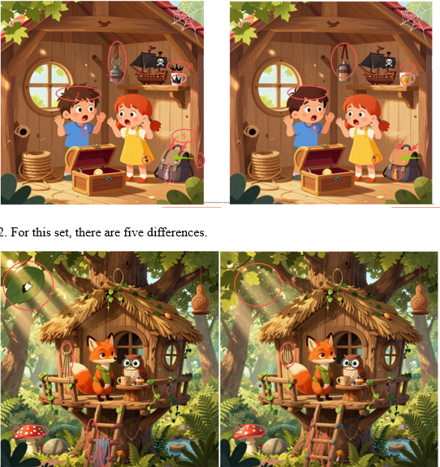
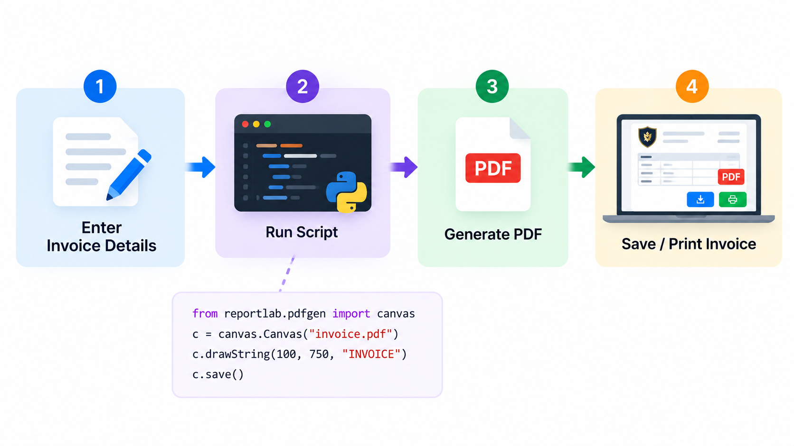
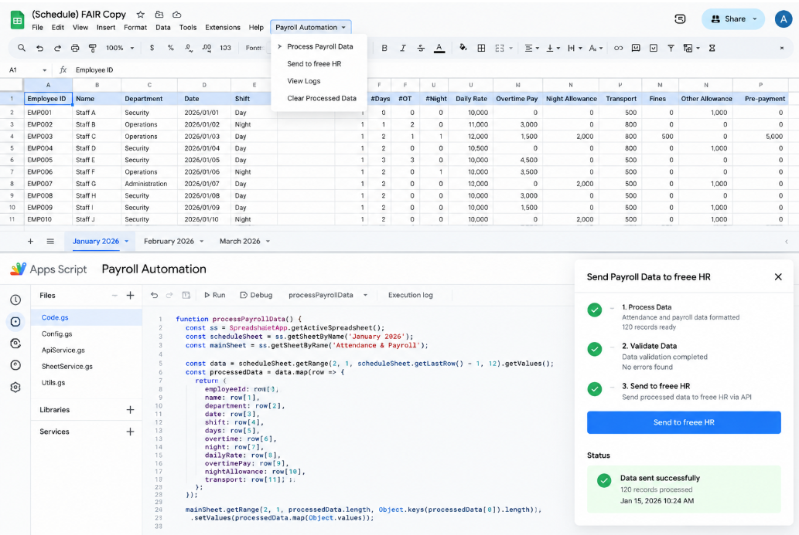

The challenge
Decision makers needed one reliable view of a business: how it makes money, how it markets and sells, who it competes with, and where the risks and opportunities are. The information was spread across many sources and hard to compare.
The solution
I researched and organized everything into a structured 17-tab report, with each area analyzed on its own tab and the key findings rolled up into an executive dashboard, strategic priorities and an investment recommendation.
How it works
- Scope and sourcesDefined the questions to answer and collected data from public and business sources.
- Area-by-area analysisCompany overview, financial and sales analysis, marketing, product strategy, technology audit and social media analytics.
- Market and competitionCompetitor analysis, distribution, logistics, brand partnerships, subscriptions and website analytics.
- Risk and opportunityRisk assessment and financial insights, with growth opportunities highlighted.
- Executive dashboardKPI scores and summaries on one page, followed by the top three strategic priorities and a recommendation.
Key features
- 17 structured tabs covering every major business area
- Executive dashboard with KPI scores
- Competitor and market analysis
- Risk assessment with mitigation ideas
- Top three strategic priorities
- Investment thesis and recommendation
Results
- One place to understand the whole business
- Key performance indicators, trends and risks made visible
- Clear priorities that support data-driven decisions
Other projects

About 1 million AI-generated image pairs with controlled differences, built with Python pipelines.

A simple Windows app design that creates professional PDF invoices from one custom template.

Payroll data flows from Google Sheets to freee HR through a custom Send button and REST API.